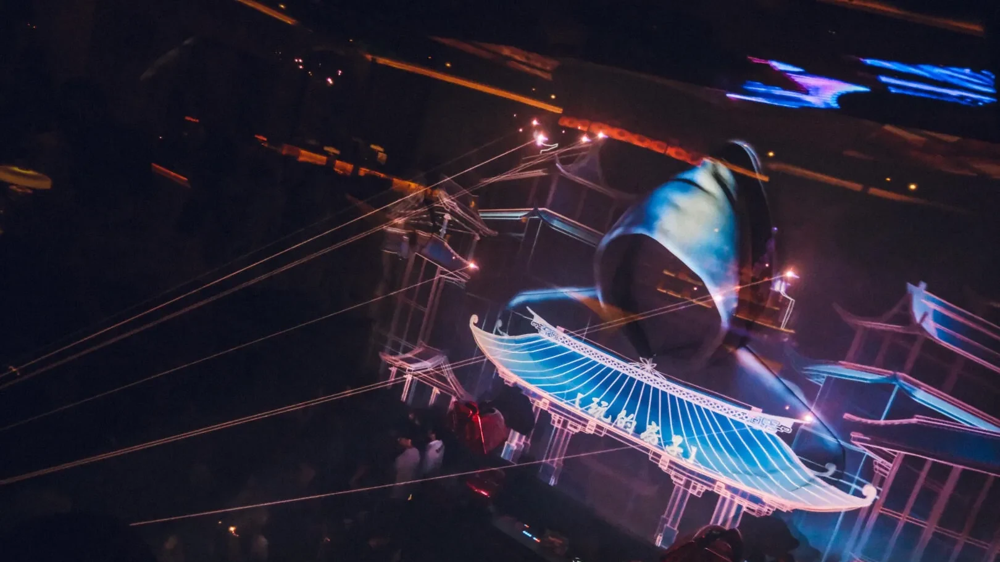
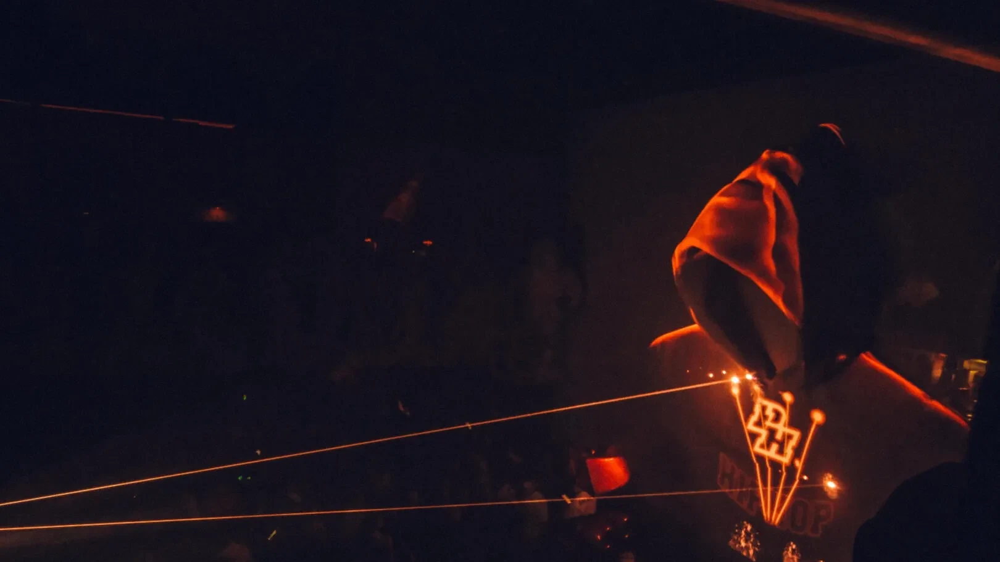
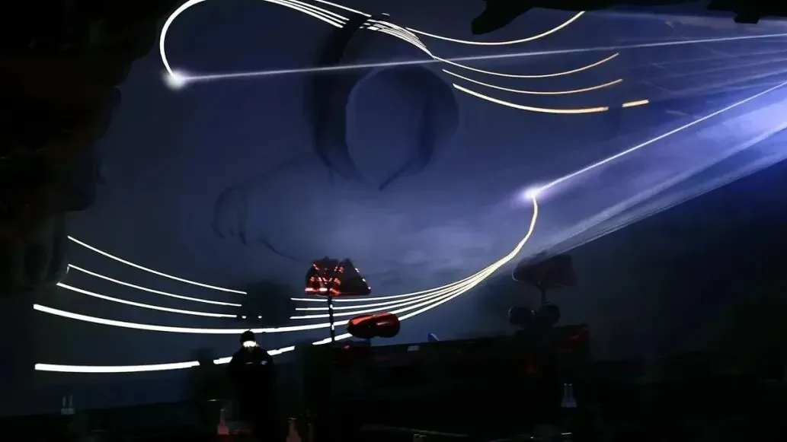
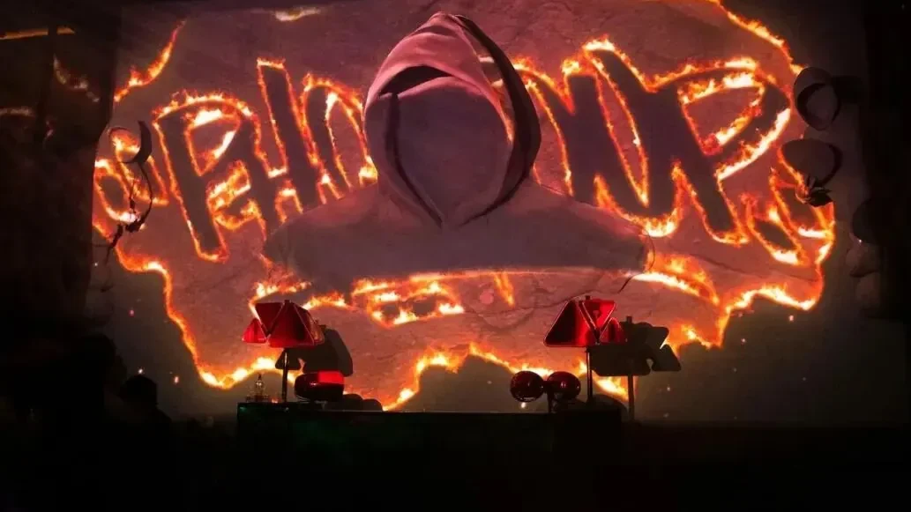

Faceless Rave
无面狂欢
激光与音乐同步的雕塑光影。
为环绕舞台的帽衫人雕塑群制作部分视觉内容：激光沿雕塑、斗拱与钢管阵列的轮廓勾出线条，黑白城市与嘻哈快切动画在强拍与留白之间交替，整段影像与音乐节拍同步，在每晚零点开场的一分钟里让静止的雕塑醒过来。
Light on sculpture, with lasers synced to the music.
Part of the visuals for the ring of hooded-figure sculptures around the stage: lasers draw lines along the sculptures, the dougong brackets and the steel-pipe array, while black-and-white city scenes and fast-cut hip-hop animation alternate between hard beats and pauses. The whole piece is synced to the music, waking the still sculptures for one minute every night at midnight.



